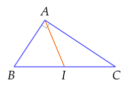
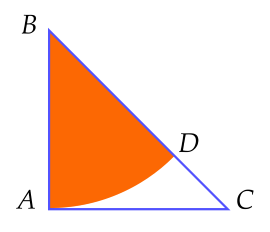
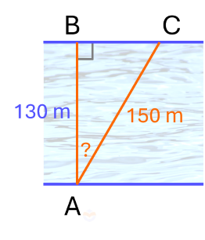

Câu 13. Hình họcCó vẽ hình
Phần II — Trắc nghiệm đúng hoặc sai
0,88 điểm
Cho tam giác $A B C$ vuông tại $A$ có $A B=3$ cm, $A C=4$ cm.

(Nhấp vào ô màu vàng để chọn đúng / sai)
Mỗi ý a), b), c)… là một phát biểu độc lập: nhấp vào ô để chọn Đúng/Sai,
0,22 điểm mỗi ý.
Câu 14. Hình họcKhông vẽ hình
Phần II — Trắc nghiệm đúng hoặc sai
0,88 điểm
Một khu đất có dạng hình chữ nhật với chiều dài $x$ (m), chiều rộng kém chiều dài $9$ m . Trên khu đất đó, người ta làm một mảnh vườn trồng hoa có dạng hình thoi với một đường chéo bằng chiều dài khu đất và đường chéo còn lại bằng chiều rộng khu đất. Diện tích đất còn lại là $200$ m ² .
(Nhấp vào ô màu vàng để chọn đúng / sai)
Mỗi ý a), b), c)… là một phát biểu độc lập: nhấp vào ô để chọn Đúng/Sai,
0,22 điểm mỗi ý.
Câu 15. Đại số
Phần III — Trắc nghiệm trả lời ngắn
0,46 điểm
Cho hệ phương trình $\left\{ \begin{aligned}&ax+5y=11 \\&2x+by=3 \\\end{aligned} \right.$ có nghiệm là $x=1,\,y=1$ . Giá trị của biểu thức $2a-b$ bằng bao nhiêu?
Trả lời ngắn — gõ kết quả, kèm đơn vị nếu đề hỏi đơn vị.
Câu 16. Đại số
Phần III — Trắc nghiệm trả lời ngắn
0,46 điểm
Xét bất phương trình: $\dfrac{2x+1}{3}+\dfrac{6x-4}{12}>\dfrac{x-3}{4}$ . Tìm nghiệm nguyên nhỏ nhất của bất phương trình đã cho.
Trả lời ngắn — gõ kết quả, kèm đơn vị nếu đề hỏi đơn vị.
Câu 17. Hình họcCó vẽ hình
Phần III — Trắc nghiệm trả lời ngắn
0,46 điểm
Một khu đất có dạng hình tam giác $ABC$ vuông cân tại $A$ với độ dài cạnh $AB$ là $20$ m. Người ta trồng hoa trên mảnh đất hình quạt (phần được tô đậm), phần còn lại trồng cỏ. Diện tích phần đất trồng cỏ (lấy $\pi ≈ 3,14$ ) bằng bao nhiêu mét vuông?

Trả lời ngắn — gõ kết quả, kèm đơn vị nếu đề hỏi đơn vị.
Câu 18. Hình họcCó vẽ hình
Phần III — Trắc nghiệm trả lời ngắn
0,46 điểm
Một khúc sông rộng khoảng $130$ m. Một con đò dự định chèo từ bờ bên này sang bờ bên kia theo phương vuông góc với bờ sông, nhưng do bị dòng nước đẩy xiên nên phải chèo khoảng $150$ m mới sang được bờ bên kia.

Vậy dòng nước đã đẩy con đò lệch đi một góc so với phương dự định ban đầu là bao nhiêu độ? (làm tròn kết quả đến độ).
Trả lời ngắn — gõ kết quả, kèm đơn vị nếu đề hỏi đơn vị.
Câu 19. Đại số
Phần IV — Tự luận
1,83 điểm
Quãng đường từ $A$ đến $B$ dài $90$ km. Một người đi xe máy từ $A$ đến $B$ . Khi đến $B$ , người đó nghỉ $30$ phút rồi quay trở về $A$ với vận tốc lớn hơn lúc đi là $9$ km/h. Thời gian kể từ lúc bắt đầu đi từ $A$ đến lúc trở về $A$ là $5$ giờ. Tính vận tốc xe máy lúc đi từ $A$ đến $B$ .
Bài làm của bạn:
Câu 20. Đại số
Phần IV — Tự luận
1,83 điểm
Cho biểu thức: $P = \dfrac{a \sqrt{a} - 1}{a - \sqrt{a}} - \dfrac{a \sqrt{a} + 1}{a + \sqrt{a}} + \Big( \sqrt{a} - \dfrac{1}{\sqrt{a}}\Big) \Big( \dfrac{3 \sqrt{a}}{\sqrt{a} - 1} - \dfrac{2 + \sqrt{a}}{\sqrt{a} + 1} \Big)$ .
a. Rút gọn biểu thức $P.$
b. Chứng minh rằng với mọi giá trị của $a$ (thỏa điều kiện thích hợp) ta đều có $P > 6$ .
Bài làm của bạn: